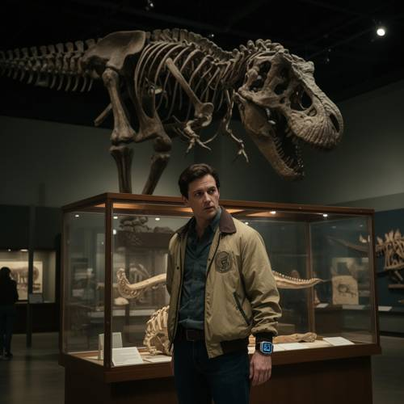
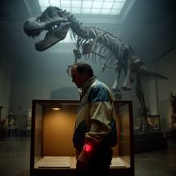

Entity Layout — Under the huge skeleton of the Tyrannosaurus rex, a detective wearing
Under the huge skeleton of the Tyrannosaurus rex, a detective wearing a retro windbreaker stood in front of the display cabinet. There were no other tourists in the exhibition hall, but he was wearing an electronic watch that did not belong to that era on his wrist, full of suspense movie qualities.

Direct — one call, no iterationContinuum — Qwen3.8-27B + FLUX.2-dev
Judge — Direct
PASSEntity Layout - Three-Dimensional Space — The image depicts a man standing in front of a glass display cabinet. A large dinosaur skeleton is positioned above and behind him, fulfilling the requirement that he is 'under' the skeleton and 'in front' of the display cabinet.
PASSStyle — The image features moody, dramatic lighting with strong shadows and highlights, a muted color palette, and a composition where a large, imposing skeleton looms over a solitary figure. These elements contribute to a tense, cinematic atmosphere consistent with 'suspense movie qualities'.
FAILGrammar - Negation — The prompt states there are 'no other tourists'. In the image, another person is visible in the background on the far left, standing in the exhibition hall.
PASSCompound - Feature Matching — The man in the center is wearing a beige jacket that resembles a retro windbreaker. On his left wrist, a large, modern-style electronic watch with a glowing screen is clearly visible.
PASSWorld Knowledge — The large, bipedal dinosaur skeleton in the background has a massive skull, large teeth, and small forelimbs, which are the characteristic features of a Tyrannosaurus rex skeleton.
Judge — Continuum
PASSEntity Layout - Three-Dimensional Space — In the image, a man is positioned in the foreground, standing directly in front of a glass display cabinet. Behind and towering over him is a large dinosaur skeleton, fulfilling the requirement that he is 'under' the skeleton and 'in front of' the display cabinet.
PASSStyle — The image has a distinct cinematic and suspenseful quality. This is achieved through the use of dramatic, low-key lighting, a hazy or foggy atmosphere that obscures parts of the background, and a composition that isolates the central figure, creating a sense of mystery.
PASSGrammar - Negation — The exhibition hall appears to be empty except for the main subject. No other people or tourists are clearly visible in the scene, which aligns with the negative constraint in the prompt.
PASSCompound - Feature Matching — The man in the image is wearing a color-blocked jacket that resembles a retro windbreaker. On his left wrist, a watch with a glowing red digital display is clearly visible, matching the description of an electronic watch.
PASSWorld Knowledge — The image prominently features the large, complete skeleton of a bipedal carnivorous dinosaur. Its features, including the massive skull, powerful hind legs, and small forelimbs, are consistent with the well-known appearance of a Tyrannosaurus rex.
What the agent did
Thinking
The user is asking for an image like this: underneath a huge T. rex skeleton, in front of a display case, a detective in a retro windbreaker. No other tourists in the exhibition hall. An electronic watch on his wrist that doesn't fit that era (a modern digital watch on a retro outfit). Suspense-movie atmosphere. Let me think about the composition: - Huge T. rex skeleton dominating the upper/background - Detective in retro windbreaker (70s/80s style — probably nylon, with a color block or zip-up) - Standing in front of a glass display case - Empty museum hall - Digital/electronic wristwatch visible on the wrist - Cinematic suspense-movie lighting (low-key, dramatic, teal and amber tones, film-noir-ish) Should fill in visual details: the detective's stance, probably 3/4 view, a face partially in shadow. The watch is a modern LED digital watch. The display case can contain fossils or artifacts. The lighting is dramatic. Important detail: "an electronic watch that doesn't fit that era" — that is, the detective's outfit is retro (70s/80s windbreaker) yet the watch is modern digital. So the watch should look like a modern LCD digital watch. And the whole thing should have suspense-movie atmosphere. Let's generate the image with flux2-dev. The default 1024x1024 size might be a bit cramped for a "huge" skeleton, but the harness controls the size, so I'll leave it at default. Actually, I could set a width/height too — the benchmark says the image size is fixed for comparison, and the seed/size is controlled by the harness. Better not to override the size. Let me write a detailed prompt: "Cinematic suspense-movie still, inside a nearly empty natural-history museum exhibition hall. A colossal Tyrannosaurus rex skeleton mounted high above the floor, jaws open, towering over the room. In the foreground, a man in his 40s standing in front of a glass display case, wearing a 1970s retro nylon windbreaker with a quarter-zip, dark slacks, his body in a three-quarter view, his face partly in shadow, looking up at the skeleton with a wary expression. On his left wrist, a modern digital LED watch glowing with a bright red display — conspicuously anachronistic against the vintage outfit. No other people in the hall. Dramatic low-key lighting: cool blue-grey museum floodlights from above, warm amber light pools inside the display case, long shadows, subtle film grain, shallow atmospheric haze, thriller mood, 35mm film still, moody, suspenseful." That's good. Let's generate it. After that, I'll inspect: check the watch (inspect_region the wrist area to confirm the modern digital look), check the windbreaker's retro-ness, check that there are no other tourists, check the T. rex skeleton. Alright, let's get started.
Step 1 — `generate_image`
{
"prompt": "Cinematic suspense-movie film still set inside a large empty natural history museum exhibition hall. A colossal mounted Tyrannosaurus rex skeleton towers overhead, jaws gaping, ribs and spine casting long shadows across the high ceiling. In the lower third of the frame, a man in his 40s stands in front of a glass display cabinet, seen in three-quarter view from behind at a slight angle so his face is partly visible in shadow. He wears a retro 1970s nylon windbreaker with a quarter-zip and a slightly faded color-block pattern, dark slacks. On his left wrist, clearly visible, a modern digital LED watch with a bright red illuminated display that is glaringly anachronistic against the vintage outfit. No other people anywhere in the hall. Dramatic low-key lighting: cold blue-grey floodlights from above, a warm amber pool of light inside the display case, deep shadows, faint haze, subtle film grain, 35mm thriller film aesthetic, tense mysterious mood.",
"model": "flux2-dev"
}
Result img_0

Thinking
The result is surprisingly good. Let me verify: - Huge T-rex skeleton overhead ✓ (huge, jaws wide open) - Detective wearing a retro windbreaker ✓ (color-block retro-style windbreaker, 70s/80s vibe) - In front of the display case ✓ (glass cabinet with a warm light inside) - No other tourists ✓ (no other people in sight) - An electronic watch that doesn't fit that era — there's a glowing red LED digital watch on his wrist. This looks like a modern LED digital watch glowing red. Let me zoom in on the wrist to check whether it's clearly a digital watch. Let me inspect the watch region at full resolution.
Model
This first result looks very promising — the giant T-rex overhead, the man in a retro color-block windbreaker in front of a warmly lit display case, and that glowing red LED watch. Let me zoom in on the wrist to verify that the watch reads as a modern digital watch.
The watch is a red-glowing digital LED watch, clearly a modern digital watch, with the numbers showing on the display (it looks like "9:15" or something close to that). This is exactly the anachronistic element that was requested — the glowing red LED digital display contrasts beautifully with the vintage windbreaker. Next, let me check the overall image: - T-rex skeleton: huge, jaws open ✓ - Retro windbreaker: color-block nylon, quarter-zip — has a 70s/80s feel ✓ - Display case: yes, there's a glass case with warm light inside, and the man is standing in front of it ✓ - No other tourists: from what I can see, no other people ✓ - Suspense-movie atmosphere: moody, hazy, low-key lighting ✓ One point: the prompt said "in front of the display case," and he's standing right in front of it. Good. The face is somewhat in shadow, but partially visible, which works well for a suspense-movie atmosphere. Any issues? The red of the watch is a bit blurry, but it's legible enough as a digital watch. The red glow is somewhat smeared, but it reads clearly as a digital LED watch. I could mark this as the best one right now, and maybe do a small edit to make the watch display crisper. But per the guidance, good enough is a stopping condition. The red glow is slightly blurry, but it looks like an intentional LED glow. Actually, let me look a bit more carefully — the numbers show something like "9:15" or "4:15"… hard to read, but that's fine. It looks like a digital watch, and that's the key point. Let me double-check that there are no other tourists in the background. In the background I can see the skeleton's mount and the museum wall, but no people. Good. I think this image meets all the criteria. I'll mark img_0 as the best and stop. Wait — should I improve anything? The composition is a bit cramped (1:1), but that's fixed by the harness. The subject fits. The T-rex is huge and dominant. I'm satisfied. Let me mark img_0 as the best.
Model
The close-up confirmed that the watch is clearly a modern glowing red digital LED watch, which stands out against the retro windbreaker, perfectly conveying the anachronistic detail. Everything else is fine too: the huge T. rex skeleton looms overhead with its mouth open, the color-block nylon windbreaker has that 70s/80s retro look, he's positioned in front of a glass display case lit with warm light, the hall is otherwise empty, and the hazy, low-key lighting gives it that suspense-film mood.
Step 3 — `mark_best`
{
"image": "img_0",
"reason": "All prompt elements present: huge T-rex skeleton overhead, detective in retro color-block windbreaker in front of a lit glass display case, empty hall, anachronistic glowing red digital LED watch visible on the wrist, and a moody suspense-film atmosphere."
}
Thinking
The image has been marked as the best. All elements of the prompt have been verified. It's time to stop — the result is good, and there's no need to edit it further.
Model
The image is complete and marked as the best result. Final check against the prompt: - **Huge T. rex skeleton** — the mounted skeleton towers over the whole hall, jaws gaping, dominating the upper frame ✓ - **Detective in a retro windbreaker** — a 70s/80s color-block nylon quarter-zip windbreaker, face half in shadow, studying the skeleton ✓ - **In front of the display cabinet** — he stands directly before a glass case with a warm amber light inside ✓ - **No other tourists** — the hall is completely empty apart from him ✓ - **Anachronistic electronic watch** — a glowing red digital LED watch on his wrist, clearly modern against the vintage outfit ✓ - **Suspense-movie quality** — low-key lighting, haze, long shadows, 35mm film still feel ✓